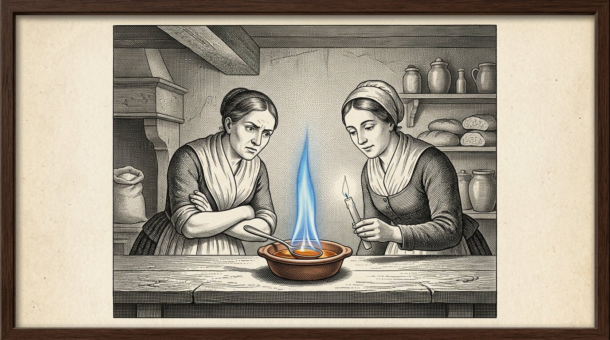
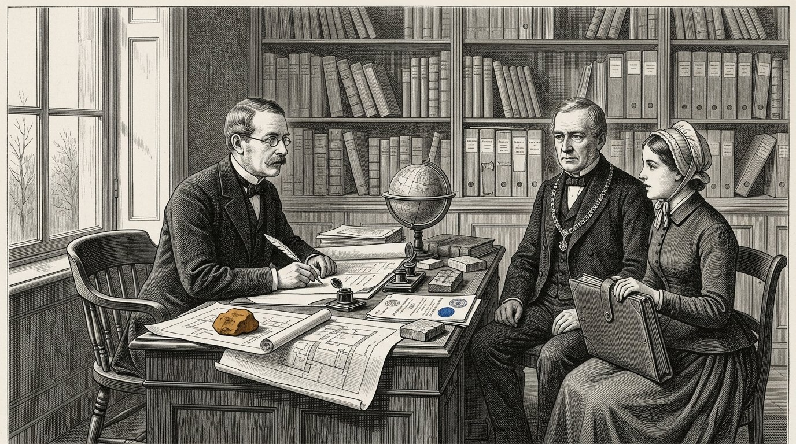
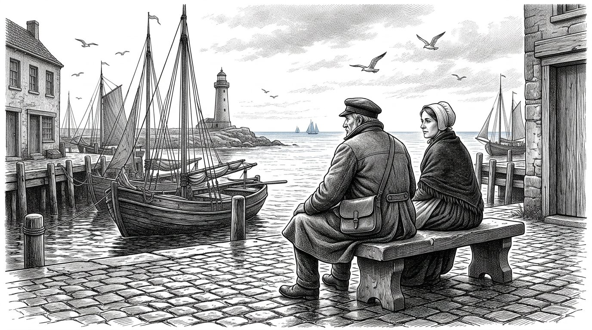

LIBRO CUATRO
El Kosaris
El libro del hidrolizado

LIBRO CUATRO
El libro del hidrolizado
El líquido que nadie había visto
Prólogo — pronunciado por Kosus
Soy Kosus. Cuando usted abra este libro, ya no estaré entre ustedes. Se lo di a Alkion para que lo guardara hasta que llegara el momento propicio, y Anthea lo puso por escrito junto con ella.
En el Libro Uno le he dado las cuatro columnas y le he mostrado los cinco barcos. Le he hablado del sol en el ecuador y de la princesa que despierta. En este cuarto libro se trata de una sola cosa que en los otros libros discurría entre líneas, pero nunca fue escrita: el líquido que sale de la hierba cuando usted la prensa en frío.
La llamamos hidrolizado. No es una sola cosa, sino muchas cosas a la vez. Es combustible para su estufa cuando los ríos de gas se congelan. Es aglutinante para las carreteras que usted tiende bajo los pies de sus hijos. Es materia prima para un plástico que dura cien años en lugar de cinco.
Ella es una respuesta a tres preguntas que hasta ahora usted respondía con tres líneas de entrada diferentes. Quien responde a tres preguntas con una sola respuesta no se vuelve más pobre, sino menos dependiente. A quien es dependiente, otros le deciden. Quien es menos dependiente decide por sí mismo. Eso no es técnica. Eso es soberanía.
Hice que Alkion oyera la tormenta en el Libro Uno. Hice que Petros llegara al muelle. Le mostré a usted el sol en el ecuador y el barco que navega con su propio combustible. Este cuarto libro es el prospecto que acompaña esas historias. Quien lo lea sabe no solo que el sol funciona. También sabe cómo.
Y él sabe, lo que es más importante, por qué no funciona sin reciprocidad. La balanza de Timaris pesa aquí mucho. Un líquido procedente de la hierba de otro país no es un aceite que usted compra. Es un apretón de manos en vidrio.
Kosus dice:lo que usted compra tres veces a tres señores diferentes, también puede construirlo una vez con un vecino. La primera manera lo hace dependiente. La segunda manera lo convierte en familia.
Por Jacobus van Merksteijn
Este es el Libro Cuatro de Kosaris. Sigue al Libro Uno, en el que se colocaron los cuatro pilares y las doce partes recorrieron el mundo desde el puerto olvidado hasta la elección del lector. Se sitúa junto al Libro Dos, que trataba sobre Diakrisis —la distinción entre lo que está establecido y lo que se ha supuesto—. Y junto al Libro Tres, en el que Anthea mostró cómo se prepara a un niño para el juicio independiente.
Este cuarto libro trata sobre el clima, pero no como escriben los periódicos sobre él. Trata sobre una sustancia que procede de una sola hierba y que resuelve tres problemas a la vez: la energía que mantiene caliente su casa, el camino por el que sus hijos van andando a la escuela y el plástico en el que están envueltos sus libros. Cuando una sola sustancia resuelve tres problemas a la vez, cambia algo más que la técnica. Cambia quién decide.
Los personajes no son nuevos. Alkion le resulta conocido del Libro Primero, Parte VI, donde oyó la tormenta que nadie más oyó. Petros le resulta conocido de la Parte VIII, donde llegó al muelle de Malta junto al antiguo Caballero. Demira está junto a su horno como siempre. Anthea ya es adulta y es ella quien pasa este libro de mano en mano.
Menciono una cosa por su nombre, algo que los periódicos prefieren evitar. Nosotros llamamos a ese líquido hidrolizado. Procede de una hierba gigante llamada Juncao y de un árbol llamado Moringa. Se obtiene mediante prensado en frío, no mediante calentamiento ni fermentación. Surge de la tierra sin quebrarla. Y procede del sol del ecuador, donde está y donde permanece.
Quien lea este libro y se lo haga leer a un ministro no cambiará al ministro. Quien se lo lea a su vecino quizá cambie el pueblo. Como siempre en estos libros: el poder reside en transmitirlo, no en convencer a quien quiere permanecer sordo.
Malta, noviembre de 2026.
Parte 1

En el que Alkion regresa al puerto, Demira le enseña qué se obtiene de la hierba gigante y se exprime la primera botella de hidrolizado.

Alkion había cumplido veintiséis años. Había trabajado seis veranos en el sur, en las plantaciones de Juncao, y había regresado a casa en invierno porque Kosus le había escrito que quería mostrarle algo. Ya no lo encontró en el muelle cuando llegó. Había muerto tres semanas antes, y Demira no había podido hacérselo saber porque la carta había salido demasiado tarde.
Ella estaba sentada la primera mañana después de su llegada en el banco junto a la panadería y miraba el puerto. Demira salió con una taza de leche caliente y dijo: él me ha dejado algo para ti. Está al fondo de la panadería.
Alkion la siguió al interior. En la habitación del fondo había un arca de madera, y sobre el arca yacía una carta. La carta estaba escrita de puño y letra de Kosus. Decía: Alkion, durante seis años has aprendido en el sur lo que la hierba puede hacer. Ahora es el momento de aprender qué es la hierba. Abre esta arca cuando te encuentres en un estado de ánimo sereno.
Alkion abrió el arca. Dentro había una prensa de tornillo de madera, pequeña pero pesada, del tamaño de las que antiguamente se usaban para las uvas. Y una botella de vidrio, vacía. Y un cuaderno encuadernado en cuero. En la primera página, con la letra de Kosus, estaba escrito: el hidrolizado.
Alkion leyó las páginas. Leyó despacio, porque Kosus escribía como hablaba, y ella volvía a oír su voz. Había escrito cómo se prensa el pasto en frío, sin el calor que quiebra la dulzura. Había escrito qué plantas se colocan entre él para que el pasto se alimente a sí mismo y el líquido permanezca puro. Había escrito qué sale de ello: un líquido que arde sin humo, que se endurece sin cemento, que da forma sin moldeado.
Alkion cerró el cuaderno. Miró a Demira. Dijo: esto no es una sola cosa. Son tres cosas a la vez. Demira dijo: eso es exactamente lo que él me dijo cuatro noches antes de su muerte. Dijo: si algo es una sola cosa que hace tres cosas a la vez, no es técnica. Es una llave.
Alkion volvió a poner la carta sobre el arcón. Le dijo a Demira: entonces prensaré mañana.
Kosus dice:quien hereda una llave no hereda una cerradura. Hereda el deber de buscar qué puertas se han abierto en su tiempo y cuáles han permanecido cerradas.

Demira pensó que el prensado se parecería al de una prensa de uvas. Alkion explicó que era distinto. Con las uvas se prensa para extraer el jugo. Con Juncao se prensa para separar la estructura sin romperla. Si se prensa a una temperatura demasiado alta, el líquido se oxida y se pierde la mitad. Si se prensa a una temperatura demasiado baja, no sale nada. La temperatura debe ser la de una mañana de verano tibia.
Extendieron la hierba en la prensa, tal como decía el escrito: primero aplastada entre dos telas, luego dispuesta en capas, con un puñado de hojas de Moringa entre ellas, procedente de un manojo seco que Kosus había dejado. La Moringa hacía algo que sin ella no se comprende: mantenía separadas las partículas. Sin Moringa, estas se aglutinaban y el líquido se volvía turbio. Con Moringa, permanecía claro como el ámbar.
Apretaron el tornillo. Transcurrió una hora antes de que apareciera la primera gota. Transcurrió otra hora antes de que un fino chorrito corriera hacia el vaso. Al final del día tenían media botella.
Demira dijo: ¿es esto todo? Alkion dijo: esto es de un puñado. Si usted prensa una bala, obtiene medio litro. Si usted prensa un cobertizo lleno, obtiene cien litros. Si usted prensa un campo, obtiene tres mil.
Demira miró la botella. Ella dijo: «¿En qué arde?». Alkion dijo: «Todavía no en lo que tenemos. Debo construir una estufa que funcione con este líquido. Durante cuarenta años hemos construido estufas que funcionan con gas y con carbón. Este líquido necesita su propia estufa. Será la semana que viene».
Demira dijo: ¿y el resto? Alkion dijo: aquí está el primero. Ella alzó la botella contra la luz y vio cómo el líquido contenía matices de color que iban del amarillo al ámbar y casi al azul cuando se inclinaba la luz. Dijo: Kosus dijo que quien vea este líquido por primera vez debe guardar silencio durante tres respiraciones. Guardaron silencio durante tres respiraciones.
Entonces dijo Demira: en mi vida he visto salir pan de la masa y niños de las mujeres. Esta es la tercera cosa que me maravilla.
Kosus dice:lo que se enfría a partir de algo que crece conserva la fuerza de lo que ha crecido. Lo que se calienta pierde la mitad de lo que era. Quien lo enfría retiene el sol. Quien lo calienta lo desperdicia.

La segunda día vino a ver a Demira la vecina. Se llamaba Marta y no horneaba, sino que vendía verduras en el mercado. Tenía cuatro hijos y estaba acostumbrada a tener una opinión sobre todo.
Marta vio la prensa y la botella y dijo: ¿qué clase de taberna está usted montando? Demira dijo: no es una taberna. Es un líquido que arde, liga y forma. Marta dijo: si arde, liga y forma, no es un líquido, es una mentira.
Alkion no dijo nada. Tomó una cucharada del líquido y la vertió en un cuenco. Cogió una vela de la mesa y acercó la llama al cuenco. El líquido prendió fuego. Ardió con una llama azul uniforme, sin humo, y desprendió un calor que se sentía en el rostro cuando uno se encontraba a un palmo de distancia.
Marta dijo: eso es ginebra. Alkion dijo: pruebe. Marta no se atrevió. Alkion mojó el dedo en el cuenco y lo lamió. Ella dijo: no sabe a nada. La ginebra sabe a ginebra. Esto sabe como sabe el agua: a nada.
Marta dijo: entonces es aceite. Alkion dijo: el aceite apesta. Este no. Huela. Marta olió. Ella dijo: es verdad, no huele.
Marta se sentó en el banco. Ella dijo: ¿qué es entonces? Alkion dijo: es lo que hay en la hierba que hace crecer la hierba. Ahora lo hemos extraído sin calentarlo. Es antiguo. Toda planta lo tiene. Nunca hemos preguntado si también quería salir sin que fuéramos a hervirlo.
Marta reflexionó. Dijo: ¿y el propio pasto? ¿Queda algo de él? Alkion dijo: después de prensarlo, el pasto se convierte en alimento para las vacas. Lo que queda después del alimento se vuelve a arar en el campo donde creció el pasto. No se pierde nada. La vaca lo come y la tierra lo recibe de vuelta. Nosotros solo tomamos el líquido, y eso es lo que elaboramos aquí.
Marta se levantó. Dijo: si esto es cierto, lo que usted dice, entonces llevamos cuarenta años sin pensar. Demira dijo: eso es exactamente lo que diría Kosus. Marta dijo: ¿y dónde está Kosus ahora? Demira dijo: muerto. Marta dijo: qué lástima. Habría querido preguntarle por qué no nos lo contó hace treinta años.
Alkion dijo: él lo ha contado. Nosotros no hemos escuchado. Eso es distinto.
Kosus dice:quien no cree en una sustancia nueva porque nunca ha oído hablar de ella, tampoco cree en el fuego, la cerveza o los huevos hasta que los ve por primera vez. La diferencia entre la incredulidad y la ignorancia es una sola demostración en el banco junto a la panadería.

Esa noche, Alkion continuó leyendo el escrito de Kosus. Leía junto a una lámpara que ardía con el propio líquido que había vertido en una vieja lámpara de aceite. La lámpara ardía con más intensidad que las lámparas de aceite a las que estaba acostumbrada, y sin el dulce humo.
Kosus había escrito seis páginas sobre lo que llamaba hidrolizado. La primera página trataba de cómo se prensaba. La segunda, de lo que se hacía con ello. La tercera, de lo que no se debía hacer. La cuarta, de los socios del ecuador. La quinta, del seto de espinos alrededor de los gobernantes. La sexta era una carta que comenzaba así: a quien reciba esto después de mí.
En la tercera página, bajo el apartado de lo que no se debe hacer, decía esto: no caliente el líquido hasta convertirlo en etanol, a menos que se encuentre en una situación de emergencia. El etanol es un paso intermedio que lo aplana todo hasta convertirlo en combustible. Cuando fabrica etanol, pierde aquello que hace especial al líquido: su versatilidad. Entonces ya solo puede quemarlo. Ya no puede aglutinar ni dar forma.
Alkion dejó el cuaderno. Ella comprendió lo que él quería decir. El camino apresurado para atravesar la crisis era fabricar etanol y quemarlo rápidamente en motores viejos. El camino lento consistía en aprender qué es el líquido en sí y construir con él. El camino apresurado llegaría a los periódicos. El camino lento llegaría al siglo.
Ella continuó con la quinta página, sobre el seto de espinas. Kosus había escrito: quien intenta hacer pasar este líquido en Bruselas como combustible es rechazado porque no encaja en las categorías existentes. A quien intenta hacerlo pasar como aglutinante se le rechaza porque no existe ninguna inspección para ello. A quien intenta hacerlo pasar como materia prima para plástico se le ridiculiza porque el plástico es malo. A quien intenta hacerlo pasar simultáneamente por las tres puertas, lo despachan tres funcionarios, cada uno con su propio expediente y que no hablan entre sí.
Kosus había escrito debajo: ¿qué hacer? Rodee el seto. Construya primero en un pueblo. Deje que funcione. Cuando cien pueblos lo hagan, el seto llegará hasta usted. No espere por él. No viene por sí solo.
Alkion cerró el cuaderno. Pensó: eso es lo que voy a hacer. Pueblo por pueblo.
Kosus dice:un escrito que usted hereda de un maestro no es una biblia. Es una guía de viaje. Quien lee la guía y no viaja, no tiene nada. Quien viaja sin guía, se pierde. Quien lee y viaja a la vez, llega.
Parte II
Parte 2

En el que Alkion construye una estufa a la que le gusta el hidrolizado, el pueblo pasa un invierno cálido sin pedir nada a los ríos de gas, y el alcalde aprende cuál es la diferencia entre más barato y más soberano.

Alkion encontró a un viejo herrero al otro lado del pueblo. Se llamaba Wilm y llevaba cinco años jubilado. Tenía tres estufas en su cobertizo que nunca había vendido porque entretanto la gente ya tenía gas.
Ella le dijo: tengo un líquido que arde sin humo. Wilm dijo: entonces su líquido es mejor que mis estufas. Ella dijo: sus estufas fueron construidas para aceite. Quiero convertir una para este líquido. Wilm dijo: muéstremelo.
Ella le trajo una botella. Vertió una cucharada en un cuenco y le prendió fuego. Wilm miró la llama azul y permaneció en silencio. Entonces dijo: esa llama tiene la temperatura de unas buenas brasas. Pero no tiende a quedarse abajo y a dejar fría el aire que tiene encima. Calienta por igual arriba y abajo. Eso es diferente.
Alkion dijo: ¿qué significa eso para su estufa? Wilm dijo: significa que el conducto de humos puede ser más pequeño. Que la abertura del fuego puede ser más grande. Que la cámara de calor puede ser más profunda porque la llama no se asfixia a sí misma. Puedo fabricar una en tres semanas. ¿Quiere una?
Alkion dijo: quiero diez. Wilm dijo: ¿qué quiere hacer usted con diez? Alkion dijo: nueve vecinos y Demira. Si funciona con Demira y nueve vecinos ven que funciona, tendremos cien pedidos antes de que termine el invierno. Y entonces tendremos un pueblo que depende del líquido.
Wilm reflexionó. Dijo: ¿y el líquido mismo? ¿Cuánto tiene usted? Alkion dijo: ahora, una botella. El año que viene, un cobertizo. Dentro de tres años, un campo. Wilm dijo: entonces le construiré tres para este invierno y siete para el próximo. Lo que aún no tiene, la estufa no puede pedirlo.
Alkion asintió. Dijo: usted es la primera persona que conozco que no quiere fabricar más estufas de las que líquido haya. Wilm dijo: soy viejo. Ya no tengo ganas de fabricar algo que no pueda quemarse. Eso es lo que he hecho durante treinta años con carbón. Ahora solo quiero fabricar lo que arde.
Dice Kosus:un artesano que ha envejecido y ha conservado su sabiduría sabe que es inútil fabricar más de lo que se utilizará. Un joven artesano con la misma sabiduría es una rareza. Búsquelo. Dígale que usted lo reconoce.

Tres estufas fueron colocadas para el invierno. Una en casa de Demira, otra en casa de Marta y una tercera en el cobertizo del propio Wilm. Alkion les proporcionó a los tres el líquido que había prensado aquel verano en el campo situado detrás del pueblo, donde había plantado Juncao con el permiso del alcalde.
El invierno llegó pronto. En noviembre nevó y el precio del gas subió, como subía cada año cuando ocurría algo en el este o en el sureste de lo que nadie estaba bien informado. Los vecinos de Demira se quejaron ante ella de su factura. Demira dijo: ven a sentarte conmigo al calor.
Vinieron. Se sentaron en la panadería que ya no funcionaba con gas. Miraron la estufa, que era distinta de la suya. Preguntaron: ¿cuánto le cuesta? Demira dijo: me cuesta la hierba que dejamos crecer aquí, delante de la puerta. Me cuesta una semana y media de prensado a finales del verano. Me cuesta una estufa que se compra una sola vez y dura veinticinco años. Por lo demás, no me cuesta nada.
Los vecinos dijeron: ¿y la factura? Demira dijo: no hay factura. No hay ningún proveedor que me llame. No hay ningún precio que cambie cuando ocurre algo en el extranjero. Hay una botella que he prensado yo misma. Cuando la botella está vacía, prenso otra nueva.
Los vecinos reflexionaron. Dijeron: «¿Podemos conseguir también unas estufas así?». Demira dijo: «Wilm fabricará siete para el año que viene. Si se inscribe ahora, estará en la lista». Se inscribieron. Las siete estufas quedaron reservadas en dos días.
El día de Navidad había trece personas en la panadería de Demira porque en sus casas hacía demasiado frío y ya no querían pagar lo que les exigía la factura del gas. Demira les dio pan y dijo: el año que viene estará usted en casa. Ellos dijeron: el año que viene estaremos en casa.
Alkion estaba sentada en el banco y observaba. Pensó: trece personas. Eso es un pueblo. Eso es un tercio de los habitantes. Es suficiente para convencer al alcalde de que algo debe cambiar.
Kosus dice:el primer invierno en que un pueblo se calienta a sí mismo sin los ríos que no posee es el primer invierno en que los habitantes de ese pueblo deciden qué significa la Navidad. En todos los inviernos anteriores lo decidieron personas a las que no conocían.

El alcalde pasó a visitar a Demira en enero. Era el mismo alcalde que en el Libro Uno había aprendido que una cuenta que recaía sobre el panadero era un ataúd. Había envejecido y sus hombros se habían encorvado un poco, pero sus ojos seguían siendo igual de perspicaces.
Él dijo: Demira, me han dicho que tuvo a trece personas en su casa por Navidad. Demira dijo: tuve a dieciséis, si cuenta a los niños. El alcalde dijo: ¿por qué? Demira dijo: porque mi estufa estaba caliente y la de ellos no.
El alcalde dijo: eso es un acto digno de elogio. Pero también es un problema para mí. Si veintitrés familias abandonan este pueblo porque ya no pueden pagar la factura del gas, pierdo ingresos fiscales. Si veintidós familias se quedan porque usted les da de comer, también pierdo ingresos fiscales porque siguen sin pagar el gas.
Demira dijo: entonces viene usted a mí en busca de una solución, y no para presentar una queja. El alcalde dijo: precisamente por eso estoy aquí. ¿Cuál es su solución?
Demira llamó a Alkion. Alkion explicó: si usted pone a cien familias a trabajar con el líquido, juntas tienen una cuenta de invierno de nada. La hierba crece en tierras que usted nos arrienda. El arriendo es su ingreso fiscal. La prensa está en la casa comunal, que le pertenece. El alquiler de la prensa es su ingreso fiscal. Las estufas las fabrica localmente Wilm, y Wilm paga impuestos sobre su volumen de negocios.
El alcalde dijo: entonces usted sustituye la factura del gas por arrendamiento, alquiler y facturación local. Alkion dijo: y tres cosas de las que carecía la factura del gas. Nosotros retenemos el dinero en el pueblo. Nos desvinculamos de las fluctuaciones de los precios. Y tenemos trabajo para siete personas que, de otro modo, no tendrían trabajo.
El alcalde reflexionó. Dijo: «¿Cuánto me costará ponerlo en marcha?». Alkion dijo: «Una temporada de tierras que nos ceda en préstamo y una sala en la casa comunal. Nada más».
El alcalde dijo: «¿y cuánto me va a reportar?». Alkion dijo: «Eso no puedo decírselo en cifras. Pero sí puedo pesárselo en otra balanza. Su pueblo ya no mengua. Sus jóvenes se quedan. Sus ancianos no mueren de frío. Y la fábrica de más allá que le suministra la electricidad puede pedirle lo que quiera sin que usted dependa de ella».
El alcalde miró a Alkion y dijo: lo aprendí de Demira hace veinte años. Que la balanza que cuantitativamente parece la mejor no siempre es la balanza que sostiene la aldea. Me inclino por la propuesta.
Kosus dice:un alcalde que sopesa la aldea por lo que produce en dinero no comprende lo que es la aldea. Un alcalde que sopesa la aldea por lo que la aldea sostiene, pesa con la balanza de Timaris. Esa balanza no se rompe con el mal tiempo.
Parte III
Parte 3

En el que el líquido ya no solo arde, sino que también aglutina, y en el que un funcionario provincial aprende que una carretera es más que el proveedor de su asfalto.

Wilm llegó una tarde a la panadería y llevaba en la mano un terrón que dejó sobre el mostrador. Le dijo a Alkion: esa es tu líquido, mezclado con polvo de piedra y dejado reposar durante tres días. Pensé: si arde, ¿qué hace cuando no arde?
Alkion tomó el terrón. Era duro como una piedra. Lo dejó caer al suelo. No se rompió. Dijo: ¿cómo ha hecho usted esto? Wilm dijo: he mezclado el líquido con un poco de granito triturado de mi jardín y con una gota de ácido de mi batería. Lo he puesto en una latita y lo he dejado tres días fuera. Esto es lo que salió.
Alkion hizo girar el terrón entre sus manos. Ella dijo: esto es hormigón polímero sin cemento. Wilm dijo: no sé qué es. Sé que es duro y que no se rompe.
Alkion volvió al escrito de Kosus. En la segunda página había escrito lo que se desprende de ello: el hidrolizado no es una sola cosa. Es una familia. Cuando usted lo acidifica y entra en contacto con minerales, se convierte en un aglutinante. Cuando usted lo acidifica en caliente, se convierte en una resina. Cuando usted lo mezcla con fibra vegetal y lo seca, se convierte en un material más ligero que la madera y más resistente.
Alkion volvió a leérselo a Wilm. Wilm dijo: su maestro era más inteligente de lo que pensaba. He hecho por accidente lo que él había escrito deliberadamente.
Alkion dijo: eso no es un accidente. Eso es lo que hace un viejo artesano cuando entra en contacto con una sustancia nueva. No le pregunta qué es. La mezcla con lo que conoce y observa qué sucede. Ese es el camino más corto.
Wilm dijo: ¿y ahora? Alkion dijo: ahora construimos un camino.
Kosus dice:un artesano que mezcla sus materiales con lo que recibe sin preguntar primero qué es, descubre más rápidamente qué funciona que un erudito que primero lee el manual. Ambos son necesarios. Quien reconcilia a ambos, construye.

El alcalde estaba dispuesto a sustituir un tramo del camino del pueblo. Era una franja de trescientos metros entre el centro comunitario y la iglesia. La franja había sido asfaltada once años atrás y el asfalto estaba agrietándose.
Alkion y Wilm hicieron ellos mismos la nueva capa de cobertura. Utilizaron seis barriles de hidrolizado, tres toneladas de basalto finamente triturado de una cantera agotada y un cubo de ácido cítrico del tendero. Lo mezclaron todo en una vieja hormigonera y lo vertieron sobre el subsuelo preparado.
La mezcla se endureció en tres días. Cuando estuvo lista, el camino era de un amarillo ocre, con un brillo azulado cuando la luz venía de arriba. Era más liso que el asfalto y se sentía algo más frío bajo el pie.
La gente del pueblo vino a mirar. Pasaron por encima. Decían: es un bonito color. Decían: es liso. Decían: ¿cuánto tiempo durará?
Alkion dijo: no lo sabemos. Calculamos treinta años. Quizá cincuenta. El asfalto de al lado duró once años. Si este dura veinte años, es más barato que el asfalto. Si dura treinta años, cuesta la mitad. Si dura cincuenta años, habremos construido un tramo de carretera que todavía utilizarán nuestros nietos.
El alcalde recorrió el camino. Dijo: ¿y la reparación? Alkion dijo: el mismo líquido y la misma grava. Los mezclamos y los vertemos en la grieta. Se adhiere al camino existente porque es la misma sustancia. Con el asfalto, usted debe rehacer todo el lugar.
El alcalde dijo: «¿y el color?» Alkion dijo: «el color procede de la Moringa. Podemos cambiarlo añadiendo otros pigmentos. Lo que usted ve es el color natural. En diez años se oxidará un poco y entonces se volverá más marrón. A algunas personas eso les parece hermoso. A otras, no.»
El alcalde dijo: ¿y la cuenta? ¿Cuánto cuesta un metro? Alkion dijo: menos que un metro de asfalto, siempre que nosotros mismos fabriquemos el líquido y el material triturado sea local. Si lo subcontrata a un contratista que tiene que obtenerlo de una fábrica, resulta el doble de caro. Si lo hace usted mismo con las personas que ya prensan el líquido, es barato.
El alcalde lo anotó. Dijo: voy a la provincia.
Kosus dice:un camino que el propio pueblo construye no es solo un camino. Es una lista de personas que saben cómo fue construido. Cuando se agrieta, el pueblo sabe repararlo. Quien subcontrata el camino, pierde el conocimiento junto con él.

El alcalde llevó a Alkion a la provincia. Hablaron con un funcionario responsable de la infraestructura. Se llamaba Van Dael. Era estricto y cuidadoso, y no era malo.
Van Dael dijo: «Déjeme ver lo que tiene». Alkion colocó muestras del camino sobre su escritorio. Ella le mostró cuán duro era el aglutinante. Le enseñó los dibujos que había hecho de la escritura. Explicó qué hierba crecía allí y cómo se prensaba.
Van Dael dijo: «Es interesante. Pero no puedo aprobar un camino que no encaje en las categorías existentes. Tenemos normas para el asfalto y normas para el hormigón. Su camino no es ni lo uno ni lo otro.»
Alkion dijo: ¿cuál de sus normas puedo intentar cumplir? Van Dael dijo: ninguna. Su material no encaja en ninguna de las dos categorías porque las pruebas funcionan de manera distinta. No puedo evaluarlo.
Alkion dijo: entonces puede prohibírmelo. Van Dael dijo: no prohibírselo. No puedo aprobarlo. Eso es distinto. Puede experimentar en terreno de su propia aldea. Lo que no puede hacer es registrar ese camino como carretera provincial.
Alkion reflexionó. Dijo: eso es exactamente lo que necesitamos. No queremos ser una carretera provincial. Queremos ser cien caminos rurales que funcionen. Cuando funcionen cien caminos rurales, quizá aparezca alguien que cree una nueva categoría. Hasta entonces, lo haremos al margen de su expediente.
Van Dael la miró. Dijo: usted es inteligente. Alkion dijo: tuve un maestro que me explicó esto. Dijo: los gobernantes llegan al final, siempre. No los espere. Construya primero.
Van Dael dijo: no conozco a ese maestro, pero tenía razón. Y puesto que tenía razón, haré lo siguiente. No molestaré a su aldea. También guardaré silencio ante los otros funcionarios que sí querrían molestarla. Cuando tenga diez aldeas, vuelva. Entonces quizá tengamos algo de lo que hablar.
Alkion asintió. Ella dijo: volveré cuando tengamos diez aldeas. Van Dael dijo: y hasta entonces, mantenga la cabeza baja. Hay funcionarios en Bruselas que arremeten a su alrededor solo porque ha habido silencio durante demasiado tiempo. No sea un blanco.
Ella salió de la habitación. En el pasillo, el alcalde dijo: era más fácil de lo que pensaba. Alkion dijo: era más fácil porque sabe que está equivocado. Los funcionarios que saben que están equivocados pueden ser ayudados. Los funcionarios que creen tener razón no tienen remedio. Hemos tenido suerte.
Kosus dice:un funcionario al que usted no puede evaluar, pero que tampoco le pone trabas, es un aliado al que usted no puede llamar aliado. Protéjalo evitando ponerlo en una situación incómoda. Cuando más adelante lo necesite, estará ahí.
Parte IV
Parte 4

En el que llaman a Alkion a Bruselas, descubre que el seto de espinos existe de verdad y aprende que quien no puede atravesarlo sí puede rodearlo.

Después de tres años, la aldea tenía siete estufas, trescientos metros de leña y catorce aldeas vecinas que habían empezado a hacer lo mismo. Alkion había copiado entretanto seis veces la escritura de Kosus y se la había entregado a otros seis líderes de aldea.
En la tercera primavera llegó una carta de Bruselas. La carta había sido escrita por un asesor de un comisario. Decía: estimada señora, hemos sabido que utiliza usted un material no clasificado para infraestructuras, en contra de las directrices relativas a los materiales de construcción patentados. Le rogamos que se presente en nuestra oficina en un plazo de treinta días para dar explicaciones.
Alkion leyó la carta. La volvió a leer. Se preguntó qué eran los materiales de construcción patentados, cuál era la directriz y si estaba sujeta a ella.
Ella fue a ver a Demira. Demira dijo: no vayas. Alkion dijo: si no voy, vendrá el agente judicial. Demira dijo: entonces que venga. Alkion dijo: entonces de todos modos tengo que ir. Demira dijo: pues ve, pero no vayas sola. Yo te acompaño.
Fueron juntos a Bruselas. En el tren, Alkion dijo: ¿qué espera usted que ocurra? Demira dijo: intentarán asustarnos. Nos dirán que recibiremos una multa si no paramos. No dirán qué hacemos mal porque no hacemos nada mal. Dirán que no encajamos en las categorías. Entonces nos pedirán que paremos.
Alkion dijo: ¿y qué debo decir? Demira dijo: que usted no encaja en sus categorías. Y que usted no va a detenerse porque no abandona algo que funciona solo porque no cabe en un expediente. Y que usted se va a casa. Eso basta.
Alkion dijo: ¿y si me demandan? Demira dijo: entonces tendrán su primer juicio sobre un material que ellos mismos no comprenden. Ese será su problema, no el nuestro. Y será nuestra primera publicidad que no provenga de nosotros mismos. Eso es útil.
Kosus dice:una carta de Bruselas no suele ser una orden. Es una prueba. Quien responde como se espera, confirma la valla. Quien responde como no se espera, la rodea. Ambas son válidas. Solo la segunda conduce a alguna parte.

Ellos llegaron a un edificio grande. Alkion había esperado que hubiera espinas visibles, tal como había escrito Kosus. Se sorprendió de que el edificio pareciera cualquier otro palacio burocrático: ventanas altas, pasillos sobrios, retratos en las paredes de personas que nadie conocía.
Fueron recibidos por el asesor que había escrito la carta. Era joven y cortés, y llevaba un traje que le sentaba demasiado bien. Los condujo a una sala de reuniones donde esperaban otras tres personas.
Se presentaron. El primero era de infraestructura. El segundo, de materiales. El tercero, de clima. El cuarto, que dirigía la conversación, era de cumplimiento.
Naleving dijo: señora Alkion, usted utiliza en sus caminos un material que no ha sido aprobado. Alkion dijo: no hemos solicitado ninguna aprobación. Naleving dijo: ese es el problema. Alkion dijo: ese no es mi problema. Construimos en terreno del pueblo con recursos del pueblo. No hay ninguna ley que diga que debemos solicitar aprobación para lo que construimos en nuestro propio terreno.
Infraestructura dijo: sí existe una directiva. Alkion dijo: ¿qué directiva? Infraestructura dijo: la directiva 2019/384 sobre materiales uniformes para la construcción de carreteras. Alkion dijo: lea usted esa directiva, la parte que se aplica a nosotros. Infraestructura hojeó sus papeles. Dijo: es una directiva extensa. Alkion dijo: lea usted la parte que se aplica a nosotros.
Infraestructura dijo: a esta escala, la directriz no es vinculante. Alkion dijo: gracias. Por tanto, estamos dentro de la ley.
Materiales dijo: pero su material no figura en nuestro registro. Alkion dijo: es un material de aldea. No tiene por qué figurar en su registro. Materiales dijo: si van a ampliar la escala, sí tendrá que figurar. Alkion dijo: eso es correcto. ¿Acordamos entonces que, cuando ampliemos la escala, lo registraremos? Materiales dijo: me parece razonable. Alkion dijo: entonces estamos de acuerdo.
Clima dijo: ¿y la afirmación climática? Alkion dijo: ¿qué afirmación? Clima dijo: usted afirma que su material es mejor para el clima. Alkion dijo: nosotros no afirmamos eso. Afirmamos que funciona, que es local y que no consume gas. Si alguien extrae de ahí una afirmación climática, son palabras suyas, no nuestras.
Clima dijo: pero usted sí se beneficia de los subsidios climáticos? Alkion dijo: no. Nosotros no solicitamos subsidios. Somos un pueblo que se calienta a sí mismo. Sin subsidio.
Se hizo el silencio. Cumplimiento miró a los otros tres. Cumplimiento dijo: no tengo ningún caso. Los otros tres asintieron.
Alkion dijo: gracias por su tiempo. Me voy a casa. Se levantó. Demira se levantó. Salieron. En la calle, Demira dijo: eso fue más fácil de lo que pensaba. Alkion dijo: eso se debe a que solo tienen poder sobre quienes quieren algo de ellos. A quien no quiere nada de ellos, no pueden retenerlo. Eso es rodear el seto de espinos sin tocarlo.
Kosus dice:quien quiere algo de los gobernantes es gobernado por ellos. Quien no quiere nada de ellos es ignorado o respetado por ellos. Ambas cosas son mejores que ser gobernado. Elija, pues, lo que no quiere recibir de ellos. Esa es la primera mitad de su libertad.

Ellas recorrieron el pasillo hacia la salida. El joven asesor que las había recibido caminó detrás de ellas. Dijo: señora, ¿puedo preguntarle algo al margen de la reunión?
Alkion se quedó de pie. El asesor dijo: he leído su carta desde su pueblo antes de invitarlo. También busqué su nombre en Google. He leído lo que hace. No quería invitarlo. Mi superior me obligó.
Alkion dijo: ¿y ahora qué? El consejero dijo: y ahora quiero decirle algo. En este edificio hay tres clases de personas. La primera clase ama el seto de espinos porque protege su existencia. La segunda clase odia el seto, pero no se atreve a atravesarlo de un mordisco. La tercera clase da un rodeo, como hace usted. Yo pertenezco a la segunda clase y quisiera pertenecer a la tercera.
Alkion dijo: ¿por qué me cuenta usted esto? El asesor dijo: porque quiero preguntarle si puedo ayudarle sin que mi jefe se dé cuenta.
Alkion reflexionó. Dijo: ¿cómo puede usted ayudarnos? El asesor dijo: indicándole cuándo aparezcan nuevas directrices que pudieran afectarle. Ayudándole a leer esas directrices de tal modo que comprenda cómo evitar quedar atrapado por ellas. Mencionándole colegas de otras direcciones que se muestran favorables.
Alkion dijo: ¿y qué quiere a cambio? El asesor dijo: que mi nombre no aparezca en ninguna parte. Que me inscriba bajo un nombre que no sea el mío. Y que, cuando dentro de quince años caiga el seto, dé usted a alguien de mi generación algo digno que hacer. Para entonces estaremos desempleados y no sabremos cuánto valemos ya.
Alkion dijo: su nombre aparecerá en mi libro sin su nombre. Y dentro de quince años estará usted en la lista de personas a las que se les asignará algo que hacer. Se lo prometo.
El asesor dijo: gracias. Le entregó un pequeño papel con una dirección de correo electrónico y un nombre que no era el suyo. Dijo: utilícelo únicamente cuando tenga un problema concreto. No para llevar un registro. Yo mismo le mantendré informado.
Siguieron caminando. En la calle, Demira dijo: era amable. Alkion dijo: era más que amable. Era un medio traidor dentro de su propia casa, en nuestro beneficio. Ese es el aliado más excepcional que puede usted tener. Protéjalo mejor que a su propia gente.
Kosus dice:en cada casa de la valla hay alguien que odia la valla. No es quien expresa su opinión. Es quien se dirige a usted en el pasillo cuando nadie mira. Quien aprende a reconocer a esas personas siempre tiene una puerta abierta dentro de la valla.
Parte V
Parte 5

En el que Petros regresa al muelle después de veinte años, Alkion le entrega el manuscrito de Kosus y Anthea cierra el libro con una invitación.

Petros entretanto había cumplido treinta y seis años. Había vivido veinte años en Malta junto al viejo Caballero, y cuando el Caballero murió, había viajado durante cuatro años por los países del ecuador. Un martes por la tarde de septiembre había regresado al muelle donde había llegado de muchacho.
Alkion no lo reconoció de inmediato. Vio a un hombre alto y delgado, de rostro curtido, que se había sentado en el banco junto a la panadería y contemplaba el puerto como quien no había estado allí en dieciséis años y estaba haciendo inventario de los cambios.
Ella se sentó junto a él. Dijo: usted mira como miraba yo cuando regresé por primera vez del sur. Él la miró. Dijo: Alkion. Ella dijo: Petros. Permanecieron sentados en silencio, uno junto al otro. Entonces él dijo: el pueblo ya no es lo que era.
Alkion dijo: así es. Hace más calor. Hay un taller junto a la casa comunal donde trabajan seis personas que antes no tenían trabajo. El camino es distinto. Las siete estufas se han convertido en sesenta y dos, y las catorce aldeas vecinas, en ciento cuarenta.
Petros dijo: ¿de dónde ha sacado usted todo eso? Alkion dijo: de un baúl que Kosus me dejó en herencia. Y de la hierba. Y de una sola sustancia que hace tres cosas a la vez.
Petros dijo: ¿y el Caballero? Alkion dijo: está muerto, eso lo sé. ¿Y Malta? Petros dijo: Malta ha hecho la salida. La princesa ha despertado. Ahora tenemos aquí algo que hemos construido. He vuelto porque aquí debo terminar algo que empecé de muchacho.
Alkion dijo: ¿qué desea usted terminar? Petros dijo: quiero transcribir el escrito de Kosus. Alkion dijo: ¿cómo supo usted que existía un escrito? Petros dijo: él me lo había mostrado cuando era niño. Entonces dijo: cuando tenga usted edad suficiente, lo recibirá de quien lo haya recibido después de mí.
Alkion dijo: entonces llegará usted a tiempo. Tengo cuarenta y dos años y he copiado el escrito seis veces. Si toma la séptima copia, puede comenzar en otro lugar lo que yo he comenzado aquí.
Petros dijo: ¿dónde quiere usted que empiece? Alkion dijo: eso no me corresponde a mí. Eso le corresponde a usted. Le entrego el escrito. Usted elige el lugar.
Kosus dice:un escrito que se transmite de alumno en alumno es más que un escrito. Es una cadena. Cada eslabón es una vida. Quien rompe la cadena rompe las generaciones. Quien la transmite, las prolonga.

Anthea tenía entretanto treinta y cinco años. Tres años atrás había ido a visitar a su abuela Demira y se había quedado. Ayudaba a Alkion a consignar lo que ocurría en el pueblo, y había sido ella quien había realizado la sexta copia del manuscrito.
La noche en que Petros regresó, Alkion, Demira, Anthea y Petros estaban sentados alrededor de la mesa en la panadería. Comían pan y bebían vino caliente. Anthea llevaba consigo un cuaderno en el que estaba escribiendo.
Demira dijo: ¿qué escribe usted, Anthea? Anthea dijo: escribo lo que sucede aquí desde que Alkion regresó. Lo escribo como continuación de los libros que dejó el abuelo Kosus. Creo que debe ser el Libro Cuatro.
Alkion dijo: «¿por qué?». Anthea dijo: «porque el Libro Uno proporcionó los cuatro pilares. El Libro Dos proporcionó Diakrisis. El Libro Tres era mi propio libro sobre la educación. El Libro Cuatro debe tratar de lo que estamos construyendo con la hierba y el líquido. De otro modo no se comprenderá».
Petros dijo: «¿Quién lo publicará?» Anthea dijo: «openvizier.org, como los tres anteriores». Petros dijo: «¿Y quién lo leerá?» Anthea dijo: «Los mismos lectores que los tres anteriores. Algunos comprenderán y algunos fingirán comprender. El lector más importante es el cuarto tipo: quien lo lee, hace algo y se lo transmite a su vecino. Para ese lector escribimos».
Alkion dijo: ¿y el desenlace? Anthea dijo: el desenlace es que usted entregue el escrito a Petros y que Petros comience en otro lugar. Ese es el final de este libro y el comienzo del siguiente. El Libro Cinco le corresponde escribirlo a Petros, cuando esté preparado para ello.
Petros dijo: entonces quiero pedir una cosa. Quiero que, cuando abra el cuaderno en otro lugar, no se parezca a lo que se ha hecho aquí. Quiero comenzar en un lugar donde no se sepa qué es el hidrolizado y no se sepa qué es Juncao. Quiero llegar allí con un cofre, una botella y un cuaderno, tal como Alkion llegó aquí. Quiero ver si vuelve a funcionar.
Alkion dijo: volverá a funcionar. No porque la hierba sea mágica, ni porque el líquido sea hechicero. Funciona porque es correcto. Lo que es correcto funciona allí donde alguien quiere escuchar.
Demira se levantó. Tomó el arcón que estaba al fondo de la panadería y lo puso sobre la mesa. Dijo: llévatelo, Petros. Alkion sacó el cuaderno del arcón y se lo entregó a Petros. Dijo: esta es su copia. Tengo seis. Puedo permitírmelas.
Petros tomó el cuaderno. Dijo: «¿Por dónde empezaré?». Alkion dijo: «En algún lugar donde pueda usted colocar una botella sobre un mostrador y hacer que tres personas miren la llama. No necesita usted nada más para empezar».
Anthea cerró su cuaderno. Dijo: este es el Libro Cuatro. Dijo a Petros: guárdelo bien. Cuando usted comience, haga que uno de sus primeros discípulos escriba el Libro Cinco.
Kosus dice:un libro que usted cierra con una llave en la mano de otra persona no es un libro que haya terminado. Es un libro que comienza. El verdadero lector es quien lo abre en un lugar donde aún no ha estado y escribe algo nuevo en él. Esperamos que usted sea ese lector.
El Kosaris — Libro Cuatro — El libro del hidrolizado.
Recopilado por Anthea van Merksteijn y Jacobus van Merksteijn, ingeniero y editor, residentes en Malta y Palma. Publicado bajo openvizier.org. Ilustraciones en litografía en blanco y negro con acentos azules, según la identidad gráfica de Het Open Vizier.
"Quien se hace con un líquido que hace tres cosas a la vez, no tiene entre sus manos una técnica. Tiene una llave."